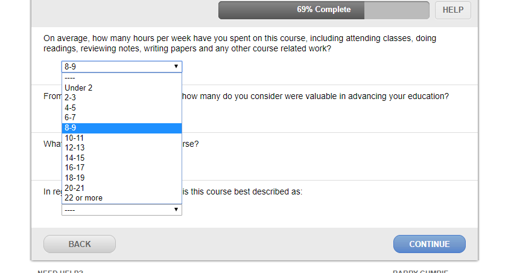
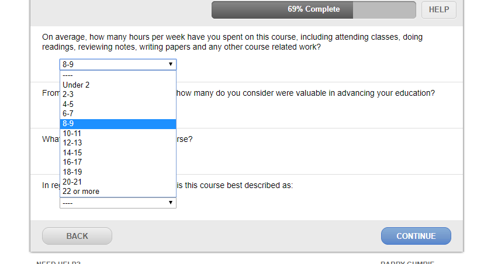

The UNA course evaluations occur every semester and allow students to give feedback on each class and how they could be better. They only take a few minutes, but could be even quicker if the layout for the answers was slightly different. Below, I've included a snippet of a few of the questions, which feature a drop down box for students to choose their answer. However, if you accidentally click an option and then disagree with it, you have to go back and click on the drop down menu again and choose the right option. It would be much quicker to use radio buttons, allowing the user to freely choose their answer in less clicks and give their feedback more quickly. The radio buttons also take up less space and are more visually appealing.
 
